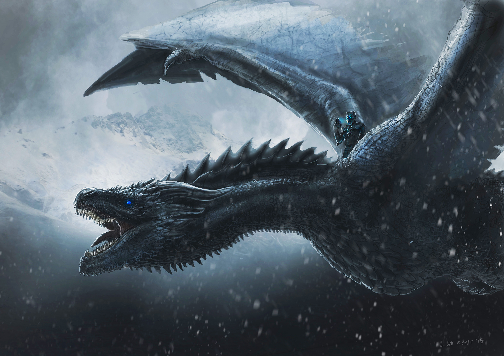

Viserion was one of the three dragons born in the wastelands beyond Lhazar, along with Drogon and Rhaegal. He was named after Daenerys Targaryen's elder brother, Viserys. He could be distinguished by his cream and gold colored scales, and red-orange wings. Eventually, he became an ice dragon[1] (although different from the ones of legend), and was enslaved by the Night King. He was also able to breathe fire that was capable of melting the Wall, though it was blue in color.
Daenerys is given three dragons eggs by Magister Illyrio Mopatis on the occasion of her wedding to Khal Drogo. She is drawn to these eggs and always keeps them in a chest with her. Viserys tries to steal them but is stopped by Ser Jorah Mormont.Viserion is born along with his two siblings after Daenerys has their eggs placed on the funeral pyre erected for Drogo. As she rises unharmed from the ashes of the pyre on the morning following the funeral, he climbs on her leg.
Viserion is not shown as much, until he is stolen by Xaro Xhoan Daxos, along with Drogon and Rhaegal. When Daenerys enters the House of the Undying to retrieve them, she eventually finds her three dragons chained. Pyat Pree attempts to chain her with magic, claiming that her dragons make his magic strong and that she makes them stronger; thus she will stay with them for an eternity. Daenerys whispers to her dragons, "dracarys," her command to breathe fire; the three of them proceed to burn Pyat Pree alive, releasing them from his magic.
Viserion, along with his brothers, accompanies Daenerys on her journey from Astapor and Yunkai. When Daenerys has a meeting with a Razdal mo Eraz, of the Wise Masters of Yunkai, Viserion fights over a piece of meat with his brothers when Daenerys makes a show of After Daenerys frees the slaves of Yunkai, Viserion takes to the sky with his siblings at Daenerys's command; a show of both power and freedom.
Viserion is seen with his brother Rhaegal fighting over a dead lamb. Drogon, who is now visibly bigger than them, quickly takes the lamb as his brothers squeal for him to share. He sets the corpse down and the three begin to eat.In response to Drogon's killing of a three-year-old girl, Daenerys leads Viserion and Rhaegal into the catacombs of Meereen, where she chains them up.

Daenerys finally decides to reenter the catacombs in an attempt to regain control over her dragons. Rhaegal and Viserion, who have grown even larger during their time in captivity, immediately lash out and breathe fire at the sight of their mother who imprisoned them.Sometime later, Daenerys, reeling over the death of Ser Barristan Selmy, arrests the leaders of Meereen's great families and brings them to meet Rhaegal and Viserion. Rhaegal roasts one of nobles and tucks in, sharing the meal with Viserion. Her point proven, Daenerys leaves, sarcastically saying that she doesn't want to overfeed the dragons.
In the Great Pyramid, Tyrion Lannister learns that Rhaegal and Viserion have not been eating anything ever since their mother had left. He decides to free them, knowing that they will be better off that way.Accompanied by Varys, Tyrion ventures alone into the catacombs and encounters Rhaegal and Viserion for the first time. Despite their initial hostility towards him, Tyrion remains calm, assuring them he is a friend of Daenerys and only wants to help. He manages to earn their trust and unshackle them, all the while telling them the story of how he wanted a dragon for his nameday, only to be disappointed by uproarious laughter from his family and the cold truth from his father. Once free, the dragons immediately move deeper into the catacombs while Tyrion quickly exits with Varys.
After Daenerys returns to Meereen and pits Drogon against the fleet assembled by Astapor, Yunkai, and Volantis, Rhaegal and Viserion break out of the catacombs and join their mother and brother in destroying the slavers' fleet with dragonfire, decisively breaking the second siege of Meereen. This defeat marks the end of the attempt to reintroduce slavery to Meereen.
Viserion and his brothers fly ahead to investigate Dragonstone while their mother proceeds there by boat.Upon Jon Snow's arrival at Dragonstone, Viserion and his brothers fly overhead and visibly scare both him and Davos Seaworth. Tyrion then comments that he has not yet gotten used to them either.
Later, Daenerys tells Jon that both Viserion and Rhaegal were named for her deceased brothers, Viserys and Rhaegar, respectively.
Viserion accompanies Daenerys, Rhaegal, and Drogon as they attempt to rescue Jon Snow and his expedition force from the White Walkers and the army of the dead at the wight hunt beyond the Wall. Viserion and his brothers burn and destroy many of the wights while Jon and his party mount Drogon with Daenerys and the captured wight. Not long after they arrive, however, the Night King is given an ice spear by another White Walker, and then hurls it at Viserion. The spear pierces the dragon's neck, causing blood and fire to erupt from the fatal wound. With a screech of agony that mingles with his brothers' cries, the helpless dragon crashes into the frozen lake and sinks into the water.
Later, Viserion's corpse is hauled up from the lake by the wights, and is resurrected by the Night King, becoming an ice dragon, his eyes glowing with the same blue tint as the White Walkers and wights.
With Viserion as his mount, the Night King leads his army to Eastwatch-by-the-Sea. There Viserion blasts the Wall with blue fire, eventually destroying the castle and the easternmost portion of the Wall, allowing the army of the dead to pass into the Seven Kingdoms.
Viserion is seen during the Great War being ridden by the Night King. During the Battle of Winterfell, his flames destroy one of the walls of Winterfell and the people within it. Jon and Daenerys, mounted on Rhaegal and Drogon respectively, engage the undead dragon and his rider in a ferocious battle, which leaves Viserion severely maimed when Rhaegal rips off part of his lower jaw and neck.
After Rhaegal retreats, having sustained serious injuries, Drogon drops from above and rams Viserion, knocking the Night King off his mount. Even riderless, Viserion descends into Winterfell's courtyard to wreak havoc there. While Jon Snow fights his way through Winterfell trying to reach Bran, he is spotted by the dragon and is almost killed by blue fire.
As Jon comes out of hiding, Viserion readies himself to kill him, but Arya Stark kills the Night King, severing the magic used to reanimate him and causing the dragon to drop dead instantly. The death of Viserion, along with those of Jorah, Rhaegal, and Missandei, causes Daenerys Targaryen to give into her grief and burn the majority of King's Landing.
He has the power to turn human infants into White Walkers, as we saw with Craster's sons who were given as sacrifices to the Night King in return for Crasters' and his brood's safety. He also raised Dany's dragon Viserion from the dead, and rode him while destroying the Wall. Viserion is the dragon who's turned into a wight by the Night King. Viserion is killed by the Night King with an ice spear — when Dany travels north to rescue Jon Snow — after which the leader of the White Walkers resurrects the dragon.
.jpeg)